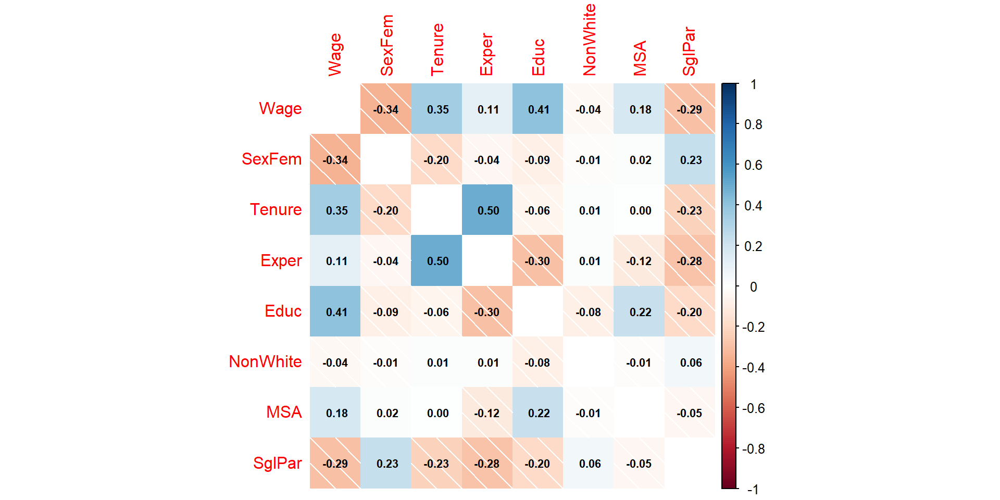

Sqft Price Cond
1 1934.162 1017563.5 19
2 1078.330 757422.9 14
3 2031.935 914609.5 15Multivariate
Motivation for multivariate regression
Digital Acylical Graph (DAG) as a reflection of domain knowledge
Data Engineering
Exploratory data analysis
How to extend univariate regression to multivariate regression in R
Interpretation of standard error, t-value, and P-value to infer on prediction quality
Prediction only:
Only trying to get the best prediction of an outcome — no interpretation of predictor impact (include all predictors that are relevant regardless of interaction effects)
Impact Analysis: Analyzing and quantifying the impact of many predictors. Leads to high requirements for statistical methods.
Impact of one predictor: Often performed in marketing, medicine, and pharma research when A/B testing is not possible.
Complete the code to run a regression with Price as outcome and Sqft as predictor. Write down the fitted formula on a piece of paper:
Sqft Price Cond
1 1934.162 1017563.5 19
2 1078.330 757422.9 14
3 2031.935 914609.5 15Complete the code to run a regression with Price as outcome and Cond as predictor. Write down the fitted formula on a piece of paper:
Sqft Price Cond
1 1934.162 1017563.5 19
2 1078.330 757422.9 14
3 2031.935 914609.5 15!!! Works only if Sqft and Cond are uncorrelated!!!
Call:
lm(formula = Price ~ Sqft, data = DataHouses)
Residuals:
Min 1Q Median 3Q Max
-188536 -75395 8595 73497 180506
Coefficients:
Estimate Std. Error t value Pr(>|t|)
(Intercept) 4.555e+05 1.688e+04 26.98 <2e-16 ***
Sqft 2.125e+02 7.927e+00 26.80 <2e-16 ***
---
Signif. codes: 0 '***' 0.001 '**' 0.01 '*' 0.05 '.' 0.1 ' ' 1
Residual standard error: 91370 on 398 degrees of freedom
Multiple R-squared: 0.6435, Adjusted R-squared: 0.6426
F-statistic: 718.5 on 1 and 398 DF, p-value: < 2.2e-16\[Price=212 Sqft + 212\]
!!! Works only if Sqft and Cond are uncorrelated!!!
Call:
lm(formula = Price ~ Cond, data = DataHouses)
Residuals:
Min 1Q Median 3Q Max
-250374 -103931 -1688 108731 247087
Coefficients:
Estimate Std. Error t value Pr(>|t|)
(Intercept) 733467 13090 56.03 <2e-16 ***
Cond 15018 1093 13.74 <2e-16 ***
---
Signif. codes: 0 '***' 0.001 '**' 0.01 '*' 0.05 '.' 0.1 ' ' 1
Residual standard error: 126000 on 398 degrees of freedom
Multiple R-squared: 0.3218, Adjusted R-squared: 0.3201
F-statistic: 188.9 on 1 and 398 DF, p-value: < 2.2e-16\[Price=15018 Cond + 4.55509\times 10^{5}\]
Call:
lm(formula = Price ~ Sqft + Cond, data = DataHouses)
Residuals:
Min 1Q Median 3Q Max
-59793 -24240 -394 22825 56474
Coefficients:
Estimate Std. Error t value Pr(>|t|)
(Intercept) 2.981e+05 5.918e+03 50.38 <2e-16 ***
Sqft 2.124e+02 2.493e+00 85.20 <2e-16 ***
Cond 1.501e+04 2.492e+02 60.23 <2e-16 ***
---
Signif. codes: 0 '***' 0.001 '**' 0.01 '*' 0.05 '.' 0.1 ' ' 1
Residual standard error: 28730 on 397 degrees of freedom
Multiple R-squared: 0.9648, Adjusted R-squared: 0.9647
F-statistic: 5446 on 2 and 397 DF, p-value: < 2.2e-16Use ? wage1 to learn more about the data:
Note, in wage analysis the wage is often used in logarithmic form and tenure and experience are squared. For simplicity, we use the orginal values instead.
Wage SexFem Tenure Exper Educ NonWhite MSA Married NumDep
1 3.10 1 0 2 11 0 1 0 2
2 3.24 1 2 22 12 0 1 1 3
3 3.00 0 0 2 11 0 0 0 2
4 6.00 0 28 44 8 0 1 1 0
5 5.30 0 2 7 12 0 0 1 1
6 8.75 0 8 9 16 0 1 1 0Can we trust a univariate regression with only \(SexFem\) ???
For example, education, tenure, experience etc. also influence \(Wage\)?
Call:
lm(formula = Wage ~ SexFem, data = DataWage)
Residuals:
Min 1Q Median 3Q Max
-5.5995 -1.8495 -0.9877 1.4260 17.8805
Coefficients:
Estimate Std. Error t value Pr(>|t|)
(Intercept) 7.0995 0.2100 33.806 < 2e-16 ***
SexFem -2.5118 0.3034 -8.279 1.04e-15 ***
---
Signif. codes: 0 '***' 0.001 '**' 0.01 '*' 0.05 '.' 0.1 ' ' 1
Residual standard error: 3.476 on 524 degrees of freedom
Multiple R-squared: 0.1157, Adjusted R-squared: 0.114
F-statistic: 68.54 on 1 and 524 DF, p-value: 1.042e-15We do not have the variables Talent and SglPar.
Talent is no problem because it is not correlated with SexFem.
For SglPar we can use data-engineer:
Wage SexFem Tenure Exper Educ NonWhite MSA SglPar
1 3.10 1 0 2 11 0 1 1
2 3.24 1 2 22 12 0 1 0
3 3.00 0 0 2 11 0 0 1
4 6.00 0 28 44 8 0 1 0
5 5.30 0 2 7 12 0 0 0
6 8.75 0 8 9 16 0 1 0Choosing as many as possible is a bad idea!!!
If choosing all variables is a bad idea, we need a procedure to choose independent variables (predictors)!
Plan and think before you run a regression
You need to install the SmartEDA package first.
Correlation Matrix
Based on the DAG decide which variables are candidates and include only these candidates in your analysis:
Experiment with the Wage Analysis: